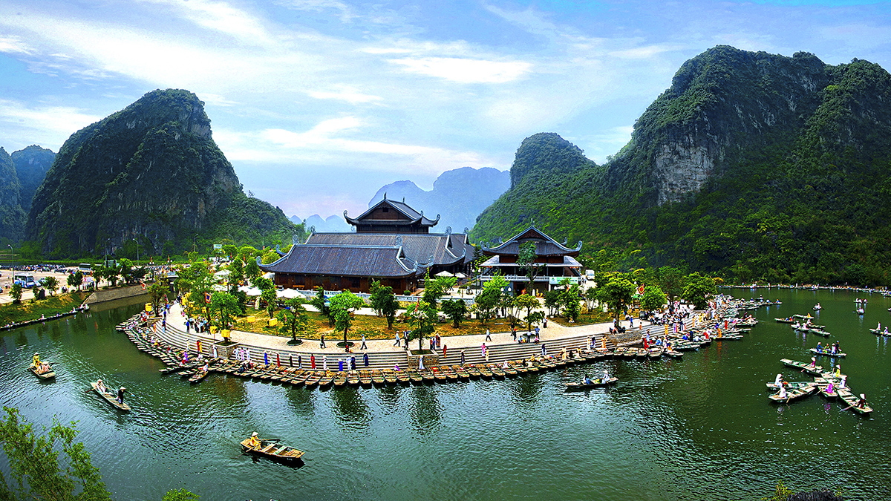
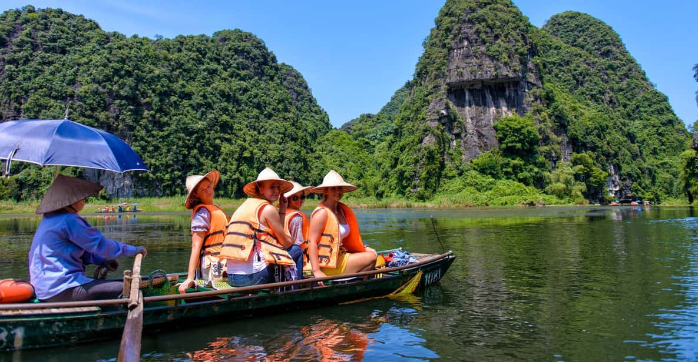
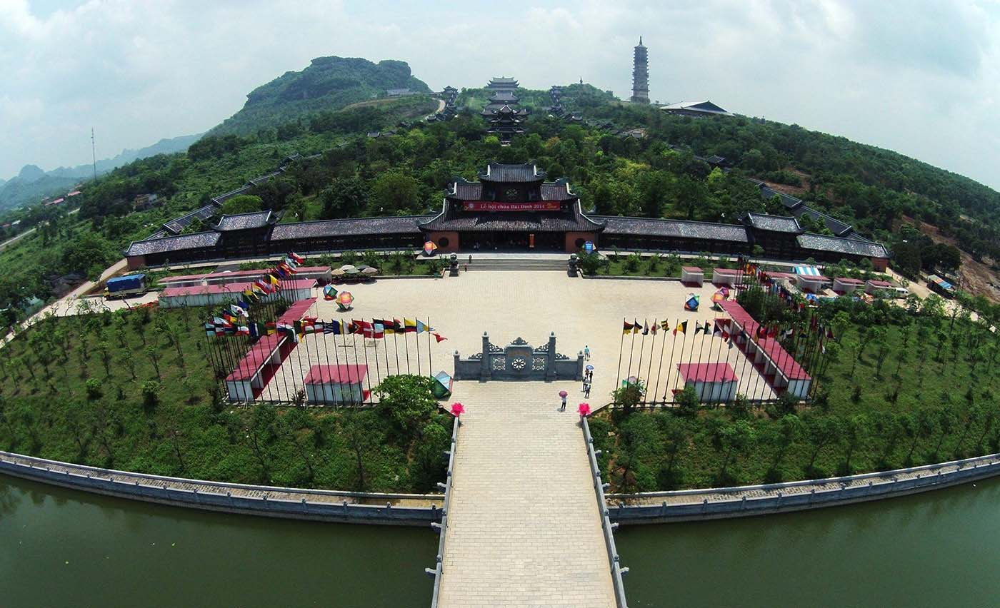
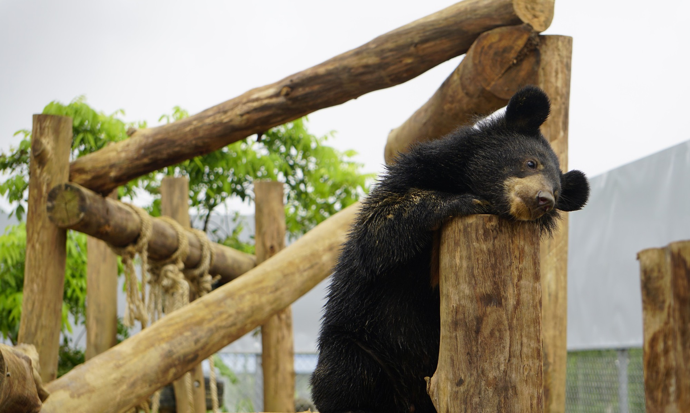
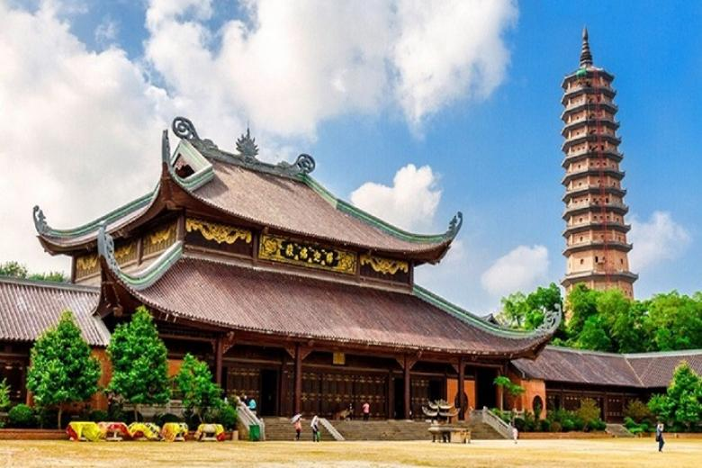

NINH BÌNH
Ít ai biết rằng Ninh Bình là một vùng đất mê hoặc, được mệnh danh là “Vịnh Hạ Long trên cạn” với khung cảnh sông nước kỳ ảo và những dãy núi đá vôi sừng sững giữa cánh đồng lúa xanh. Để cảm nhận trọn vẹn di sản được UNESCO công nhận này, hãy thả mình trên chiếc thuyền trôi êm giữa dòng sông óng ánh, rồi chinh phục những đỉnh núi huyền thoại để thu vào tầm mắt toàn bộ cảnh sắc.

Những trải nghiệm hàng đầu ở Ninh Bình
Ngắm cảnh từ Hang Múa
Từ Hang Múa, bạn sẽ có tầm nhìn bao quát toàn cảnh Ninh Bình. 500 bậc đá được tạc thẳng vào sườn núi dựng đứng dẫn lên đỉnh, nơi có đài quan sát với khung cảnh siêu thực: dòng sông uốn lượn giữa ruộng lúa và các khối núi đá vôi.
Đi thuyền sampan
Tại bến Tam Cốc và Tràng An, mỗi chiếc sampan được chèo bởi những người lái thuyền dùng chân thay vì tay. Họ sẽ khéo léo đưa bạn dọc theo những dòng nước hiền hòa, lướt qua các dãy núi đá sừng sững và tiến vào những hang động nhỏ giọt nước.

Tham quan cố đô
Ngày nay, thủ đô của Việt Nam là Hà Nội, nhưng vào thế kỷ 10 và 11, danh hiệu ấy thuộc về Hoa Lư. Thị trấn cổ nhỏ bé này từng được bao bọc và bảo vệ tự nhiên bởi núi đá vôi và sông nước, nay là điểm dừng chân lý tưởng để tìm hiểu lịch sử.

Khám phá thế giới hoang dã
Một chuyến chèo thuyền ở Khu bảo tồn thiên nhiên Vân Long là trải nghiệm không thể bỏ lỡ. Hãy mở to mắt để chiêm ngưỡng những loài quý hiếm như cò thìa mặt đen hay voọc mông trắng – một trong những loài linh trưởng nguy cấp nhất thế giới.

Viếng thăm chùa Bái Đính
Là quần thể chùa lớn nhất Việt Nam, Bái Đính kết hợp giữa phong cách cổ và hiện đại. Những ngôi chùa cổ nằm trong hang động chỉ có thể tiếp cận bằng 300 bậc thang, trong khi khu chùa mới trải rộng tới 500ha.

Thời tiết Ninh Bình
Ninh Bình đẹp nhất từ tháng 3–5 và tháng 9–11. Muốn có khung cảnh ngoạn mục nhất, hãy đến vào mùa gặt tháng 10. Từ tháng 7–8, trời nóng và có thể xuất hiện những cơn mưa rào bất chợt hoặc bão.
Di chuyển ở Ninh Bình
Hằng ngày, nhiều chuyến xe buýt khởi hành từ Hà Nội đi Ninh Bình. Bạn có thể đặt xe van hạng sang đưa thẳng tới Tam Cốc – nơi có nhiều chỗ nghỉ duyên dáng. Thuê xe riêng sẽ nhanh hơn. Nếu có thời gian, bạn cũng có thể đi tàu từ Hà Nội, với nhiều chuyến chạy mỗi ngày. Cách tốt nhất để khám phá Ninh Bình là đi tour xe máy hoặc taxi; đạp xe là lựa chọn tuyệt vời nếu bạn ở lại Tam Cốc.